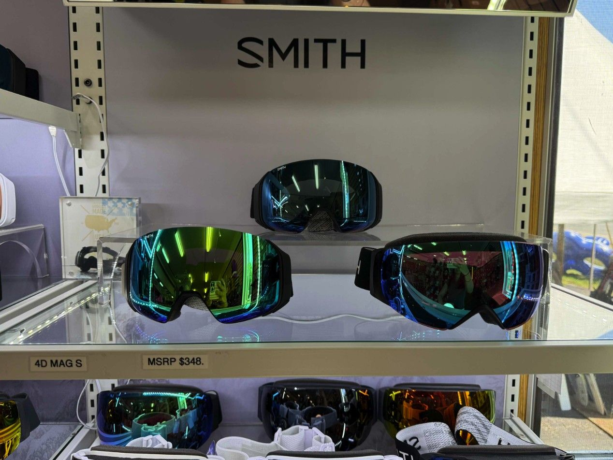
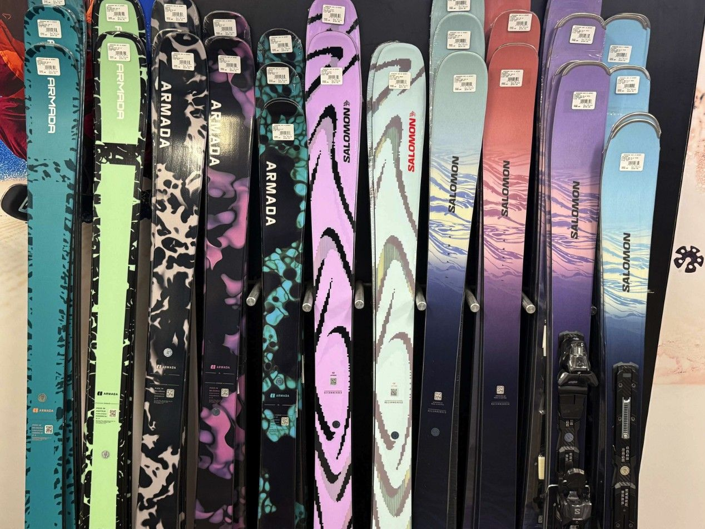

The Fall Tent Sale is on
September 18 to October 12, 2026, under the tent at 5 Railroad Street in Lincoln. Our biggest deals of the year on skis, snowboards, boots, apparel and helmets.
The Fall Tent Sale is the shop’s annual tradition on Railroad Street, and this year’s runs from Friday, September 18 through Monday, October 12 at the Lincoln, New Hampshire store, open every day 8:30 to 5. It is the biggest sale of the year: skis, snowboards, boots, bindings, apparel, helmets and accessories, with staff picks and deal reveals posted through the sale.
What’s under the tent
- 2026/27 demos and pre-mounted skis from Atomic, Blizzard, Völkl, Head, Elan, Rossignol, Nordica, Fischer and Salomon.
- Nordica men’s and women’s alpine boots from $199.
- Rossignol Alltrack 110 W and 130 M boots, $499.
- Prior-year Head boots 50% off.
- Left-over boots up to 70% off.
- All helmets from $69.
- Robbie’s pick, the Elan Ripstick 96 Black, at $699 including bindings.
- Jamie’s pick, the Atomic Arc 735 RS with the limited-edition 1990-91 Arc graphic.
What else is on the floor
The full 2027 Atomic lineup landed in late August: skis, bindings, boots and race skis. The new Kästle Paragon 93 and the 2027 Smith goggle wall arrived in September. The race wall is stocked from all seven race brands: Atomic, Van Deer, Head, Rossignol, Fischer, Dynastar and Salomon.
Scarborough shoppers
The fall sale is at the Lincoln store. Scarborough ran its own “Tent-Less Tent Sale” this summer, July 24 through August 9, with the same markdowns under an actual roof. Watch the journal and Instagram for the next Maine sale dates.
Before you come
Bring your boots if you are shopping for skis, and your current skis if you want a tune while you are here. Boot fittings during the sale: appointments recommended, call the Lincoln store.
More from the journal

The 2027 Smith goggles just landed at Rodgers Lincoln
ChromaPop clarity, dialed-in fit, colorways for days. Come see the wall for yourself.

Inside binding mounting and testing at the Scarborough shop
Mounted, adjusted, tested. Every pair is checked before it leaves our hands. Get your setup ready for the season.

Unwrapping the new Kästle Paragon 93
The Paragon 93 is in the store now. Come check them out.